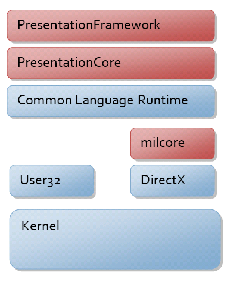
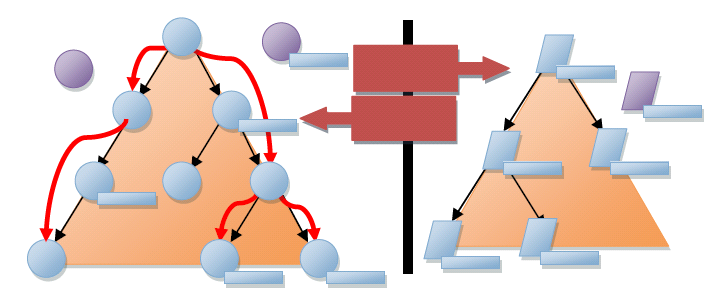

Архитектура WPF
В этом разделе предлагается интерактивный обзор иерархии классов Windows Presentation Foundation (WPF). Он охватывает большую часть основных подсистем WPF и описывает их взаимодействие. Здесь также подробно рассматриваются некоторые архитектурные решения WPF.
System.Object
Основная модель программирования WPF доступна через управляемый код. Ранее, на этапе проектирования WPF, несколько раз обсуждалось, где следует провести черту между управляемыми и неуправляемыми компонентами системы. CLR предоставляет ряд возможностей, которые делают разработку более продуктивной и надежной (включая управление памятью, обработку ошибок, систему общих типов CTS и т. д.), но требуют некоторых затрат.
Основные компоненты WPF показаны на приведенном ниже рисунке. Красные разделы диаграммы (PresentationFramework, PresentationCore и milcore) представляют собой основные части кода WPF. Только один из этих компонентов является неуправляемым — milcore. Компонент milcore написан в неуправляемом коде, чтобы обеспечить тесную интеграцию с DirectX. Все отрисовки в WPF выполняются с помощью подсистемы DirectX, позволяющей эффективно использовать оборудование и программное обеспечение для отрисовки. WPF также необходим тонкий контроль над памятью и выполнением. Обработчик композиции в milcore крайне чувствителен к производительности и требует отказа от многих преимуществ CLR в пользу производительности.

Связь между управляемыми и неуправляемыми частями WPF обсуждается далее в этом разделе. Остальная часть управляемой модели программирования описана ниже.
System.Threading.DispatcherObject
Большинство объектов WPF являются производными от DispatcherObject, который предоставляет базовые конструкции для работы с параллелизмом и работа с потоками. WPF основана на системе обмена сообщениями, реализуемой диспетчером. Его работа очень похожа на работу обычного генератора сообщений в Win32. В действительности диспетчер WPF использует сообщения User32 для выполнения межпоточных вызовов.
Существует два основных понятия при обсуждении параллелизма в WPF: диспетчер и сходство потоков.
На этапе проектирования WPF основной целью был переход к одному потоку выполнения при непотоковой модели "со сходством". Сходство потоков случается, когда компонент использует идентификатор выполняемого потока для сохранения некоторых типов состояния. Наиболее распространенной формой этого является использование локальной памяти потока (TLS) для сохранения состояния. Сходство потоков требует, чтобы каждый логический поток выполнения принадлежал только одному физическому потоку в операционной системе, что создает большую нагрузку на память. В итоге потоковая модель WPF осталась согласованной с существующей потоковой моделью User32 однопотокового выполнения со сходством потоков. Основной причиной этого явилась возможность взаимодействия — для всех систем, таких как OLE 2.0, буфер обмена и Internet Explorer, требуется выполнение в одном сходном потоке (STA).
При наличии объектов с организацией потоковой обработки STA необходим способ связи между потоками и проверки нахождения в правильном потоке. В этом заключается роль диспетчера. Диспетчер — это основная система управления сообщениями, включающая несколько очередей с назначенными приоритетами. Примеры сообщений включают необработанные входящие уведомления (перемещение мыши), функции платформы (макет) или пользовательские команды (выполнение этого метода). Путем наследования от DispatcherObject, создании CLR объекта, который обладает функциями STA и получает указатель на диспетчер во время создания.
System.Windows.DependencyObject
Одним из основных архитектурных принципов, использовавшихся в построении WPF, является предпочтение свойств методам или событиям. Свойства являются декларативными, и с их помощью проще указать цель, а не действие. Поддерживается также система для отображения содержимого пользовательского интерфейса на основе моделей (или данных). Такой подход обусловил создание дополнительных свойств, к которым можно осуществить привязку в целях лучшего управления поведением приложения.
Чтобы иметь больше свойств управления системой, требовалась более полная система свойств, чем предоставляемая CLR. Простым примером такой полноты являются уведомления об изменении. Для двусторонней привязки необходимо, чтобы обе стороны привязки поддерживали уведомления об изменениях. Чтобы поведение зависело от значений свойств, необходимо получать уведомление в случае изменения значения свойства. Microsoft .NET Framework существует интерфейс INotifyPropertyChange, который позволяет объекту публиковать уведомления об изменениях, однако это необязательно.
WPF предоставляет обширную систему свойств, производный от DependencyObject типа. Система свойств действительно является системой свойств "зависимостей" в том смысле, что она отслеживает зависимости между выражениями свойств и автоматически проверяет значение свойства при изменении зависимости. Например, если имеется наследующее свойство (например FontSize), система автоматически обновляется при изменении свойства в родительском объекте элемента, наследующего значение.
Основой системы свойств WPF является понятие "выражение свойства". В этом первом выпуске WPF система выражений свойств закрыта и все выражения предоставлены как часть платформы. Выражения объясняют, почему система свойств не поддерживает привязку к данным, создание стилей или жестко заданное наследование, но вместо этого представлена слоями более поздних версий в платформе.
Система свойств также предоставляет способ разреженного хранения значений свойств. Так как объекты могут иметь десятки (если не сотни) свойств и большинство значений находится в состоянии по умолчанию (унаследованы, задаются стилем и т. д.), не каждый экземпляр объекта должен иметь все определенные в нем свойства в полном объеме.
Наконец, последняя новая особенность системы свойств — это понятие присоединенных свойств. WPF элементы основаны на принципе композиции и многократного использования компонентов. Часто бывает так что некоторые содержащий элемент (например Grid макета элемента) требуются дополнительные данные о дочерних элементах для управления их поведением (например, сведения о строке/столбце). Вместо того чтобы сопоставлять все эти свойства с каждым элементом, любой объект может предоставить определения свойств для любого другого объекта. Это похоже на возможности expando в JavaScript.
System.Windows.Media.Visual
После определения системы следующим шагом является рисование пикселей на экране. Visual Предоставляет класс для построения дерева визуальных объектов, которые дополнительно включают инструкции по рисованию и метаданные по способу визуализации этих инструкций (обрезки, преобразования, и т.д.). Visual разработан максимально облегченным и гибким, так что большинство функций без общего API раскрытия и сильно зависит от защищенных функций обратного вызова.
Visual действительно является точкой входа для WPF систему композиции. Visual представляет собой точку соединения между этими двумя подсистемами: управляемым API и неуправляемым компонентом milcore.
WPF Отображает данные, проходя по неуправляемым структурам данных под управлением milcore. Эти структуры, называемые узлами композиции, представляют собой иерархическое дерево отображения с инструкциями по отрисовке в каждом узле. Это дерево, показанное в правой части расположенного ниже рисунка, доступно только через протокол обмена сообщениями.
При программировании WPF, создании Visual элементов и производные типы, которые осуществляют внутреннее взаимодействие с деревом композиции через этот протокол обмена сообщениями. Каждый Visual в WPF может создать один, ни один или несколько узлов композиции.

Здесь имеется один очень важный архитектурный момент — все дерево визуальных объектов и инструкций по рисованию кэшируется. С графической точки зрения, WPF использует систему сохраненной отрисовки. Это позволяет системе осуществлять перерисовку с высокой частотой без блокирования системы композиции при обратных вызовах, обращенных к коду пользователя. Это помогает предотвратить признаки неотвечающего приложения.
Другим важным моментом, который не заметен на схеме, является то, как система в действительности выполняет композицию.
В User32 и GDI система работает в непосредственном режиме системы обрезки. Когда требуется визуализация компонента, система устанавливает границы обрезки, вне которых компонент не может изменять пиксели, а затем компонент запрашивает рисование пикселей в этой области. Эта система работает очень хорошо в системах с ограниченной памятью, так как в случае каких-либо изменений приходится иметь дело только с измененным компонентом — два компонента никогда не воздействуют на цвет одного пикселя.
WPF использует «алгоритм рисования» для модели рисования. Это означает, что вместо обрезки каждого компонента каждый компонент запрашивается для отрисовки, начиная с заднего плана и до переднего плана отображения. Это позволяет рисовать каждый компонент поверх отображения предыдущего компонента. Преимуществом этой модели является то, что можно создавать сложные полупрозрачные фигуры. В сочетании с современным графическим оборудованием эта модель является относительно быстрой (чего нельзя было сказать на момент создания User32/GDI).
Как упоминалось ранее, основным принципом WPF является переход к более декларативной, "ориентированной на свойства" модели программирования. В визуальной системе это проявляется в паре любопытных моментов.
Во-первых, если говорить о сохраненном режиме графической системы, он действительно отражает переход от императивной модели DrawLine/DrawLine к модели, ориентированной на данные, — new Line()/new Line(). Этот переход к управляемой данными отрисовке позволяет выполнять сложные операции в инструкциях по рисованию, выражаемых с помощью свойств. Типы, производные от Drawing представляют собой объектную модель для подготовки к просмотру.
Во-вторых, оценивая систему анимации, можно увидеть, что она является практически полностью декларативной. Вместо обязательного вычисления разработчиком следующего положения или цвета можно выразить анимации как набор свойств для объекта анимации. Эти анимации могут выражать замыслы разработчика или проектировщика (переместить эту кнопку отсюда туда в течение 5 секунд), и система может определить наиболее эффективный способ для их выполнения.
System.Windows.UIElement
UIElement Определяет основные подсистемы, включая разметку, входные данные и события.
Макет представляет собой основное понятие в WPF. Во многих системах либо присутствует фиксированный набор моделей для макетов (HTML поддерживает три модели для макетов: поток, абсолютное значение и таблицы), либо вообще нет модели для макета (User32 в действительности поддерживает только абсолютное размещение). WPF к работе, исходя из предположения, что разработчиков и конструкторов иметь гибкую, расширяемую макета модель, которая управлялась бы значениями свойств, а не императивной логикой. В UIElement уровня, вводится основное соглашение для макета — двухэтапная модель с Measure и Arrange передает.
Measure позволяет компоненту определить требуемый размер следует выполнить. Этот этап является отдельным от Arrange , так как существует множество ситуаций, когда родительский элемент запрашивает несколько раз для определения его оптимального положения и размера измерение дочернего. Тот факт, что родительские элементы запрашивают измерение дочерних, демонстрирует еще один ключевой принцип WPF — размер по содержимому. Все элементы управления в WPF поддерживают возможность изменения размера по размеру их содержимого. Это значительно упрощает локализацию и позволяет осуществлять динамическую компоновку элементов в соответствии с изменением размеров. Arrange Этап позволяет родительской для размещения и определить его конечный размер каждого дочернего элемента.
Много времени часто затрачивается на обсуждение внешней стороны WPF — Visual и связанных объектов. Однако существует также множество новшеств со стороны ввода данных. Вероятно, наиболее фундаментальным изменением в модели ввода для WPF является согласованная модель, в соответствии с которой события ввода направляются через систему.
Ввод возникает как сигнал драйверу устройства режима ядра и направляется в нужный процесс и поток через сложный процесс, в котором участвуют ядро Windows и User32. После того как сообщение User32, соответствующее входным данным, направлено в WPF, оно преобразуется в сообщение с необработанными входными данными WPF и отправляется диспетчеру. WPF позволяет необработанные входные события нельзя преобразовать в несколько фактических событий, включая возможности, как «MouseEnter», на низких уровнях системы с гарантированной доставкой.
Каждое событие ввода преобразуется по крайней мере в два события: событие предварительное и событие фактическое. Все события в WPF имеют представление о маршрутизации через дерево элементов. События называются «вверх», если они перемещаются от конечной точки вверх по дереву к корню, а также называются «нисходящими», если они начинаются с корня и обходить вниз к конечной. Предварительные события ввода перемещаются по нисходящей, причем любые элементы в дереве могут фильтровать или обрабатывать событие. Обычные события (не предварительные) перемещаются по восходящей от конечной точки вверх к корню.
Это разделение между нисходящим и восходящими этапами делает возможным согласованную реализацию таких возможностей, как сочетания клавиш. В User32 сочетания клавиш реализуются посредством одной глобальной таблицы, содержащей все необходимые сочетания клавиш (CTRL+N сопоставляется с командой "Создать"). В диспетчере приложения вызывается метод TranslateAccelerator, который будет анализировать сообщения ввода в User32 и определять их соответствие зарегистрированному сочетанию клавиш. В WPF это не работает, так как система полностью "компонуема" — любой элемент может обрабатывать и использовать любые сочетания клавиш. Наличие такой двухэтапной модели для ввода позволяет компонентам реализовать собственные методы TranslateAccelerator.
Кроме того, выполнить этот шаг UIElement также понятие CommandBindings. WPF Систему команд позволяет разработчикам определять функциональность в терминах конечной точки команды — нечто, реализующий ICommand. Привязки команд позволяют элементу определять соответствие между действием ввода (CTRL+N) и командой ("Создать"). И действия ввода, и определения команд являются расширяемыми и могут быть связаны вместе во время использования. Это делается, например, для того чтобы конечный пользователь мог легко настраивать привязки клавиш, которые ему необходимо использовать в приложении.
До этого момента в разделе рассматривались "основные" возможности WPF — возможности, реализованные в сборке PresentationCore. При построении WPF, предполагалось четкое разделение между фундаментальными частями (такими как контракт для макета с использованием мер и расположение) и частями платформы (такими как реализация определенного Макет как Grid) был желаемого результата. Целью являлось предоставление точки расширяемости внизу стека, что позволило бы внешним разработчикам при необходимости создавать свои собственные платформы.
System.Windows.FrameworkElement
FrameworkElement можно рассматривать с двумя разными способами. Он предоставляет набор политик и настроек для подсистем, введенных на нижнем уровне WPF. В нем также вводится набор новых подсистем.
Основная политика, представленная с FrameworkElement макет приложения. FrameworkElement основан на базового контракта макета представленные UIElement и добавляет понятие "ячейки «макета», упрощает для авторов макета создание согласованного набора управляемых свойствами семантик макета. Свойства, такие как HorizontalAlignment, VerticalAlignment, MinWidth, и Margin (по) обеспечивают всем компонентам, производным от FrameworkElement согласованное поведение внутри контейнеров макета.
FrameworkElement упрощает также API представление о многих функциях см. в на уровне ядра WPF. Например FrameworkElement обеспечивает прямой доступ к анимации с помощью BeginStoryboard метод. Объект Storyboard предоставляет способ создания скриптов нескольких анимаций на основе набора свойств.
Две наиболее важные вещи, FrameworkElement вводит являются привязка данных и стили.
Подсистема привязки данных в WPF должна быть относительно знакома каждому, кто использовал Windows Forms или ASP.NET, чтобы создать пользовательский интерфейс приложения. В каждой из этих систем есть простой способ выразить, что одно или несколько свойств данного элемента необходимо привязать к элементу данных. WPF обеспечивает полную поддержку привязки свойств, преобразования и привязки списков.
Одной из наиболее интересных возможностей привязки данных в WPF является введение шаблонов данных. Шаблоны данных позволяют декларативно указывать способ визуализации фрагмента данных. Вместо создания настраиваемого пользовательского интерфейса, который может быть привязан к данным, можно обойти проблему и позволить данным определять способ отображения.
Создание стилей — это облегченная форма привязки данных. Посредством создания стилей можно привязать набор свойств из общего определения к одному или нескольким экземплярам элемента. Стили применяются к элементу посредством либо явной ссылки (задавая Style свойство) либо неявного связывания стиля с CLR тип элемента.
System.Windows.Controls.Control
Наиболее значимая возможность для элемента управления — это использование шаблонов. Если представлять себе систему композиции WPF как систему отрисовки сохраненного режима, то шаблоны позволяют элементу управления описывать свою отрисовку в параметризированной, декларативной форме. Объект ControlTemplate действительности, это не более чем скрипт для создания набора дочерних элементов, с привязками к свойствам, предлагаемым элементом управления.
Control предоставляет набор стандартных свойств Foreground, Background, Padding, называя лишь несколько примеров, которые авторы шаблона можно затем использовать для настройки отображения элемента управления. Реализация элемента управления обеспечивает модель данных и модель взаимодействия. Модель взаимодействия определяет набор команд (таких как "Закрыть" для окна) и привязки к действиям ввода (таким как нажатие красного символа X в верхнем углу окна). Модель данных предоставляет набор свойств либо для настройки модели взаимодействия, либо для настройки отображения (определяется шаблоном).
Это разделение между моделью данных (свойства), моделью взаимодействия (команды и события) и моделью отображения (шаблоны) позволяет полностью настроить внешний вид и поведение элемента управления.
Типичным аспектом модели данных элементов управления является модель содержимого. Если взглянуть на элемент управления, такие как Button, вы увидите, что он имеет свойство с именем «Content» типа Object. В Windows Forms и ASP.NET это свойство, скорее всего, было бы строкой, но это ограничивает тип содержимого, который можно поместить на кнопку. Содержимое для кнопки может представлять собой простую строку, сложный объект данных или все дерево элементов. В случае объекта данных используется шаблон данных для создания отображения.
Сводка
WPF предназначена для создания динамических, управляемых данными систем представления. Каждая часть системы предназначена для создания объектов с помощью наборов свойств, которые определяют их поведение. Привязка данных является основополагающей частью системы и интегрирована на каждом уровне.
Традиционные приложения создают отображение, а затем привязывают его к некоторым данным. В WPF все, что касается элемента управления, каждый аспект отображения, создается посредством некоторого типа привязки данных. Текст внутри кнопки отображается путем создания составного элемента управления внутри кнопки и привязки его отображения к свойству содержимого кнопки.
В начале разработки приложений на основе WPF все должно быть знакомо. Можно задавать свойства, использовать объекты и привязывать данные практически так же, как с помощью Windows Forms или ASP.NET. При углублении в архитектуру WPF вы обнаружите, что можно создавать значительно более сложные приложения, которые фундаментально обрабатывают данные, как драйвер ядра приложения.